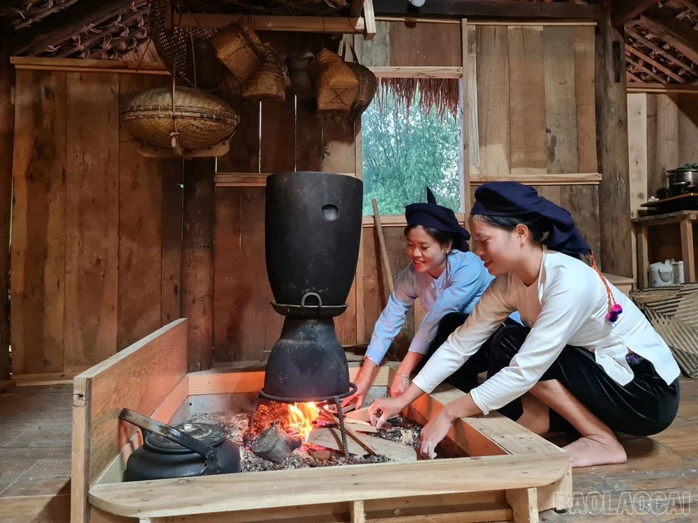

HUYỀN THOẠI BIỂN RỪNGHuyền thoại Chim Nộc Cẩu Hua & Khát vọng Vượt biển
Trong triết lý dân gian cổ xưa của người Tày, Nùng tại Lạng Sơn, thế giới được hình dung là vũ trụ "Phố Slung - Nặm Tỉ" (Trời trên - Nước dưới). Giữa vùng giao nhau mênh mông ấy có chú chim khổng lồ huyền thoại mang tên Nộc Cẩu Hua (Chim chín đầu chín đuôi).
"Khi giông bão dâng tràn, chính chim Nộc Cẩu Hua đã xòe đôi cánh rộng lớn chuyên chở con người và những con thuyền nhỏ vượt qua sóng dữ đến bờ bến an toàn."
Tích cổ này không mang màu sắc huyền bí mà là lời nhắc nhở thế hệ sau về tinh thần đoàn kết, sự đùm bọc lẫn nhau của cư dân vùng biên cương trước khắc nghiệt của thiên nhiên.
Đọc toàn bộ tích cổ →